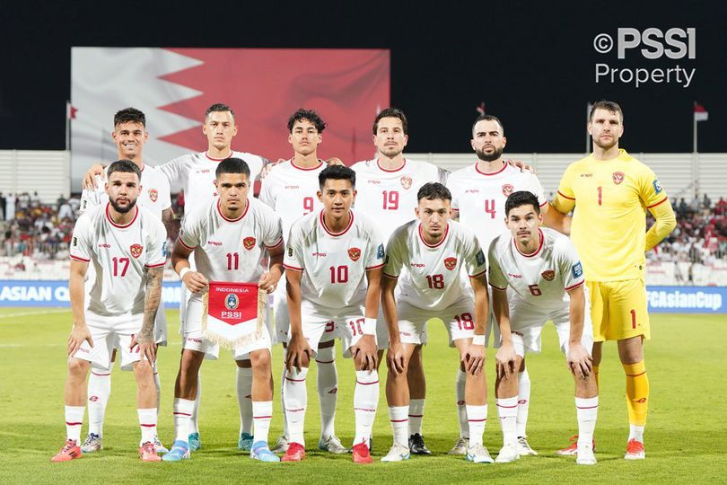
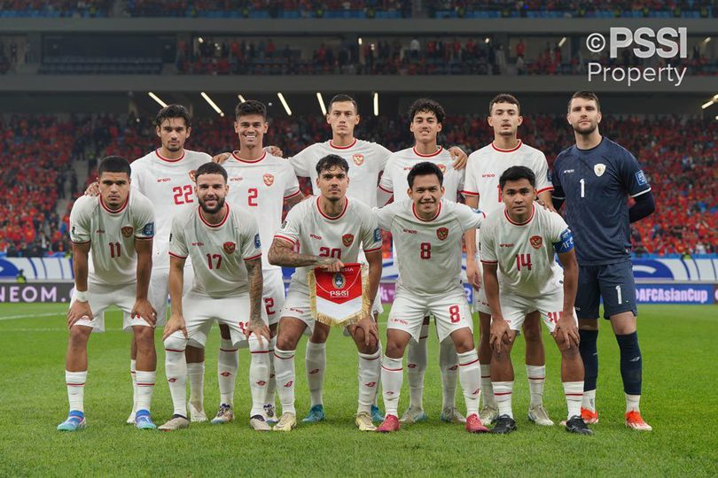
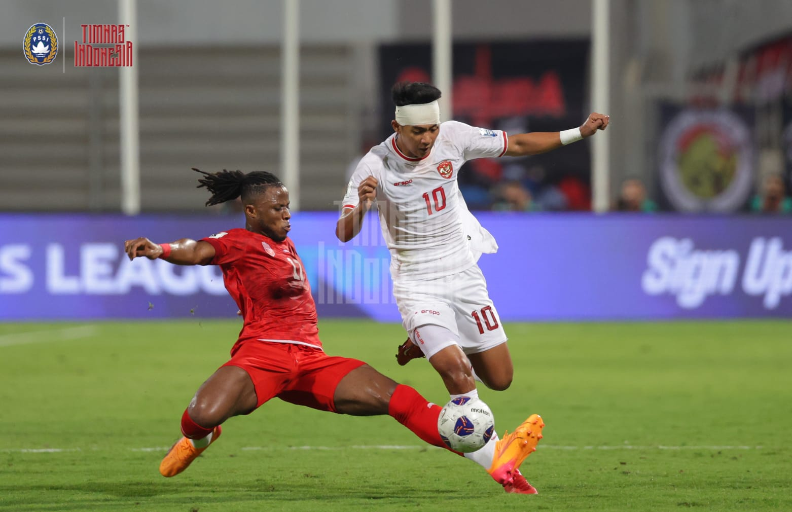
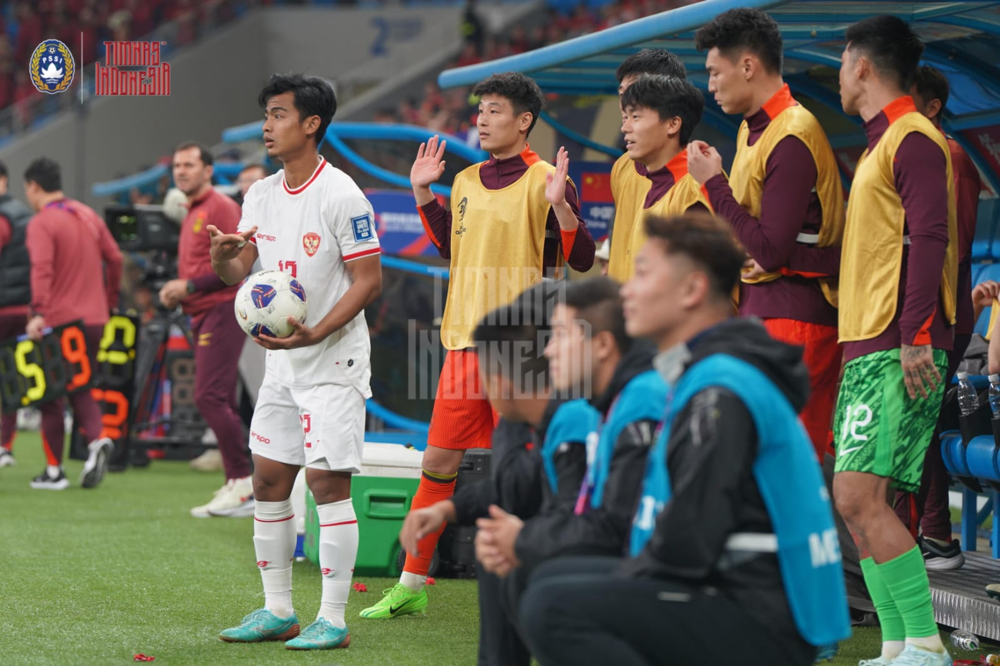

Perkembangan timnas Indonesia saat ini bisa di bilang sangat pesat. Di lihat dalam kurun waktu 4 tahun terakhir semenjak timnas di nahkodai pelatih asal Korea Selatan,Shin Tae Yong atau biasa di sapa STY tersebut,Timnas memperlihatkan progress yang sangat ciamik. Bersamaan dengan di tunjuknya Ketua Umum Erick Thohir,masa depan Timnas Indonesia terbilang sangat cerah. Bagaimana tidak,Timnas Indonesia berhasil lolos ke Round 3 untuk pertama kalinya dalam sejarah.
Ini merupakan kabar bahagia bagi para pecinta bola di tanah air. Hasil drawing memutuskan,Timnas akan satu grup bersama para Raksasa Asia lainnya. Timnas satu grup dengan Jepang,Australia,Arab Saudi,Bahrain,dan Cina. Tentu saja ini adalah langkah yang berat. STY sendiri menargetkan hasil realistis untuk bisa Finish posisi 4,dan kemudian bersaing di Round 4.
Timnas sendiri sudah bermain melawan Timnas Arab Saudi pada 6 September 2024 di King Abdullah Sport City Stadium,dengan skor imbang 1-1. Kemudian melawan Timnas Australia pada 10 September 2024 di Stadion Utama Gelora Bung Karno,skor 0-0 bertahan hingga peliut panjang akhir pertandingan.
Pemain yang di panggil Shin Tae Yong saat menjamu Bahrain dan Cina
Goalkeeper
Marteen paes,Ernando Ari,Nadeo Argawinata
Defender
Pratama Arhan,Mees Hilgers,Jay Idzes,Rizky Ridho,Sandy Walsh,Eliano Reijnders,Calvin Verdonk,Jordi Amat,Wahyu Prast,Asnawi Mangkualam,Shayne Pattynama,Muhammad Ferari
Miedfielder
Thom Haye,Ivar Jenner,Nathan Tjoe-A-On,Marselino Ferdinand,Ricky Kambuaya
Striker
Ragnar Oeratmangoen,Witan Sulaeman,Malik Risaldi,Rafael Struick,Dimas Drajad,Egy Maulana Vikri,Hokky CarakaStarting Line-Up Timnas Indonesia VS Timnas Bahrain
Coach : Shin-Tae-Yong
Formasi: 3-4-3
(1) Marteen Paes>GK
(2)Mees Hilgeers (3)Jay Idzes>Captain (4)Jordi Amat
(6)Sandy Walsh (19)Thom Haye (18)Ivar Jenner (17)Calvin Verdonk
(10)Malik Risaldi (9)Rafael Struick (11)Ragnar Oeratmangoen
Starting Line-Up Timnas Indonesia VS Timnas Cina
Coach : Shin-Tae-Yong
Formasi: 3-4-3
(1) Marteen Paes>GK
(2)Mees Hilgeers (3)Jay Idzes (17)Calvin Verdonk
(14)Asnawi Mangkualam>Captain (22)Nathan Tjoe-A-On (18)Ivar Jenner (20)Shayne Pattynama
(8)Witan Sulaeman (9)Rafael Struick (11)Ragnar Oeratmangoen

Gambar 1.1 : Line-Up Timnas Indonesia kontra Timnas Bahrain

Gambar 1.2 : Line-Up Timnas Indonesia kontra Timnas China
Squad asuhan Shin Tae Yong ini sedang berada dalam sedikit tekanan,pasalnya di 2 match terakhir melawan Bahrain dan Cina,Squad Garuda gagal mendapatkan poin penuh lantaran mengalami hasil imbang dalam match kontroversial melawan Bahrain di Bahrain National Stadium pada 10 Oktober 2024 dengan skor 2-2. Skor di cetak oleh Ragnar Oeratmangoen di menit 45+3,dan Rafael Struick di menit 74. Gol penyama kedudukan oleh Bahrain di cetak oleh Mohammed Jasim di menit 15 dan 90+9.
Match tersebut di bilang kontroversial,lantaran ketika tambahan waktu yang hanya +6 menit,namun wasit asal oman,Ahmed Al Kaf belum meniup peluit. Hingga akhirnya Bahrain menyamakan kedudukan di menit 90+9. Pecinta sepak bola tanah air serta pihak Timnas,baik staff pelatih hingga pemain dan juga PSSI,sangat geram dan mengutuk sikap wasit yang di rasa tidak fair bahkan sejak awal hingga akhir pertandingan.

Gambar 1.3 : Pemain Timnas Malik Risaldi dengan kepala di perban saat berhadapan dengan Pemain Bahrain
Sedangkan timnas harus menelan pil kekalahan yang pait saat bertandang ke Cina di Qingdao Youth Stadium pada 15 Oktober 2024 dengan skor 2-1. Gol timnas Cina di cetak oleh Behram Abduweli menit 21 dan Zhang Yuning menit 44. Sementara timnas indonesia berhasil memperkecil kedudukan saat lemparan jauh Arhan berhasil di manfaatkan dengan baik dan di jadikan gol oleh Thom Haye pada menit 86. Dengan demikian Hasil 2-1 bertahan hingga peluit akhir pertandingan.
Kesalahan dalam Starting Line-Up di nilai menjadi penyebab Squad Garuda mengalami kekalahan. Sang Kapten Asnawi Mangkualam pun menjadi sasaran amukan netizen khususnya pecinta bola tanah air,karena di nilai underperform saat menjalani laga. Shayne Pattynama pun tak lepas dari sasaran hujatan,karena blunder akibat miskomunikasi membiarkan bola hingga di manfaatkan oleh pemain Timnas Cina menjadi sebuah Gol. STY di nilai blunder dalam menentukan kesebelasan utama pada laga tersebut. Permainan yang solid dan rapih dari Timnas Cina besutan Branco Ivankovic pun menjadi poin penting saat mengalahkan Squad Garuda.

Gambar 1.4 : Momen Arhan sedang bersiap untuk lemparan ke dalam hingga berbuah gol untuk Timnas Indonesia
Erick Thohir menegaskan bahwasanya Squad Garuda asuhan Shin Tae Yong akan di evaluasi guna memantapkan tim untuk pertandingan selanjutnya kontra Jepang dan Arab Saudi. Shin Tae Yong pun di minta agar menyiapkan squad terbaiknya nanti di partai selanjutnya. Adapun Squad Timnas sekarang di rasa belum bisa untuk mematok target setinggi mungkin. Dengan kedatangan pemain keturunan,timnas yang sekarang mampu bersaing di level Asia. Adapun kabar terbaru dengan resminya Kevin Diks,pemain dari klub liga Denmark Copenhagen. Pemain keturunan Belanda tersebut siap membela Timnas Indonesia.
Gambar 1.5 : Momen Timnas Indonesia kala menghadapi Timnas Arab Saudi pada pertandingan Round 3 sebelumnya
Gambar 1.6 : Momen Timnas Indonesia kala menghadapi Timnas Jepang saat Piala Asia 2023
Timnas Indonesia akan menghadapi Jepang dan Arab Saudi dalam partai lanjutan Kualifikasi Piala Dunia 2026 Zona Asia,pada tanggal 15 november 2024 menghadapi Jepang dan 19 november 2024 menghadapi Arab Saudi. Timnas akan bermain Home yang akan di gelar di Stadion Utama Gelora Bung Karno Senayan pukul 19.00 wib. Dalam partai lanjutan Kualifikasi Piala Dunia,yang dimana Piala Dunia 2026 akan di gelar di Amerika Serikat.